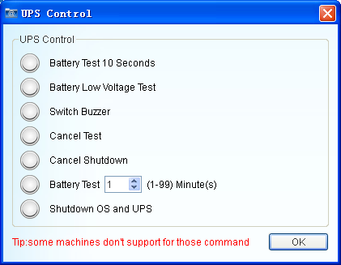

| UPSmart User Manual |
| Control |
|
|
|  |
| Figure 1:Control |
Note 1: The control commands can execute the command with
UPS about whether to respond.
Note 2: whether to close the
operating system and system setup options are checked off a
relationship.